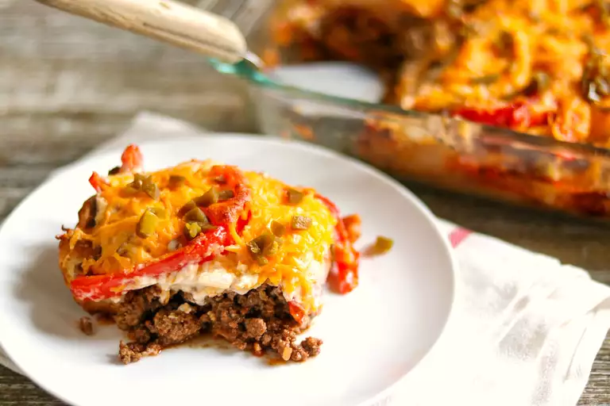
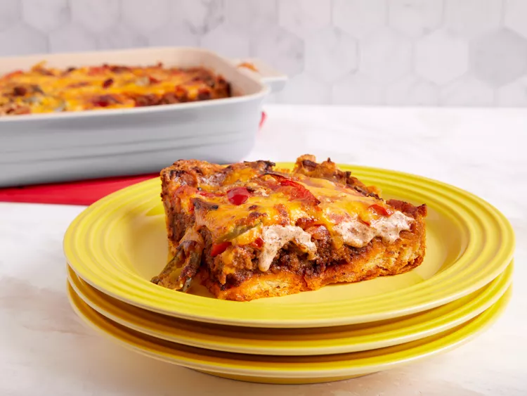

Wayne Casserole


John Wayne Casserole Ingredients
- Biscuits- This convenient dinner starts with a can of refrigerated biscuits
- Beef- You'll need a pound of ground beef for this meaty casserole.
- Taco seasoning: Use store-bought taco seasoning or make your own with our
- Vegetables: Sliced onions and bell peppers are sautéed together, while sliced tomatoes are layered with the other ingredients. Jarred jalapeños, meanwhile, spice things up a bit.
- Sour cream and mayonnaise: A mixture of sour cream and mayonnaise is creamy, tangy, and adds tons of welcome richess.
- Cheese: Because isn't everything better with shredded Cheddar cheese? You could use shredded Pepper Jack if you like a little extra heat.
How to Make John Wayne Casserole
- The crust : Press the biscuit dough in the bottom and up the sides of a prepared baking dish. Bake in the preheated oven until lightly browned.
- Cook the meat: Cook the beef until crumbly. Drain the fat, stir in seasoning and water, and bring to a boil. Reduce the heat and simmer. Transfer the meat to a bowl.
- Cook the veggies: In the same pan, cook the sliced onions and peppers until tender.
- Make the creamy layer: Combine the sour cream, mayo, 1/2 of the Cheddar, and 1/2 of the cooked veggies in a bowl.
- Layer and bake the casserole: Layer the meat, tomatoes, onion-pepper mixture, jalapeños, and sour cream mixture on top of the biscuit dough. Sprinkle it with cheese. Bake in the preheated oven until the cheese is browned and bubbly.
How to Store John Wayne Casserole
Allow the leftover John Wayne casserole to cool completely before storage. Transfer to an airtight container and store in the refrigerator for up to three days. Reheat in the oven or in the microwave.